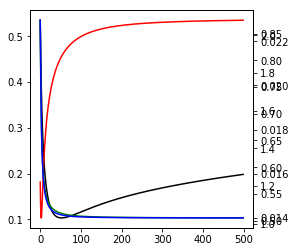

In [317]:
%matplotlib inline
import ohmlr
import numpy as np
import matplotlib.pyplot as plt
In [318]:
n_features = 4
n_samples = 1000
max_iter = 500
x_classes = [np.arange(8) for _ in range(n_features)]
y_classes = np.arange(8)
In [319]:
model = ohmlr.ohmlr.ohmlr(x_classes=x_classes, y_classes=y_classes, random_coeff=True)
In [320]:
# fig = plt.figure(figsize=(4,4))
# ax = plt.gca()
# ax.hist([model.v, np.vstack(model.w).flatten()], label=['bias','weights'], density=True)
# ax.set_xlabel('$v, w$')
# ax.set_ylabel('density')
# plt.legend()
# plt.show()
In [321]:
v, w = np.copy(model.v), np.copy(model.w)
n_param = v.shape[0] + np.prod(w.shape)
x, y = model.generate_data(n_samples=n_samples)
In [322]:
# plt.plot(x[:,0])
In [323]:
model.fit(x, y, max_iter=1)
mse = np.empty(max_iter)
disc = np.empty(max_iter)
for it in range(max_iter):
model.fit(x, y, max_iter=1, v_init=model.v, w_init=model.w)
mse[it] = (((v-model.v)**2).sum() + ((w-model.w)**2).sum()) / n_param
disc[it] = model.disc[0]
model.fit(x, y, max_iter=max_iter)
fig = plt.figure(figsize=(4,4))
ax = plt.gca()
bx = ax.twinx()
cx = ax.twinx()
dx = ax.twinx()
ax.plot(mse, 'k-')
bx.plot(model.disc, 'r-')
cx.plot(model.ll, 'g-')
dx.plot(model.err, 'b-')
Out[323]:
[<matplotlib.lines.Line2D at 0x132f2a0b8>]

In [324]:
# print(model.score(x, y))
# fig, ax = plt.subplots(1, 2, figsize=(8, 4))
# ax[0].plot(mse, 'k-')
# bx = ax[0].twinx()
# bx.plot(model.disc, 'r-')
# lo = min(v.min(), np.vstack(w).min())
# hi = max(v.max(), np.vstack(w).max())
# grid = np.linspace(lo, hi)
# ax[1].plot(grid, grid, 'k--', alpha=0.5)
# ax[1].scatter(model.v, v, c='r', s=10)
# ax[1].scatter(np.vstack(model.w).flatten(), np.vstack(w).flatten(), c='b', s=1)
# ax[0].set_xlabel('iteration')
# ax[0].set_ylabel('discrepancy')
# ax[1].set_xlabel('fitted')
# ax[1].set_ylabel('true')
# plt.tight_layout()
# plt.show()
In [ ]:
In [ ]: